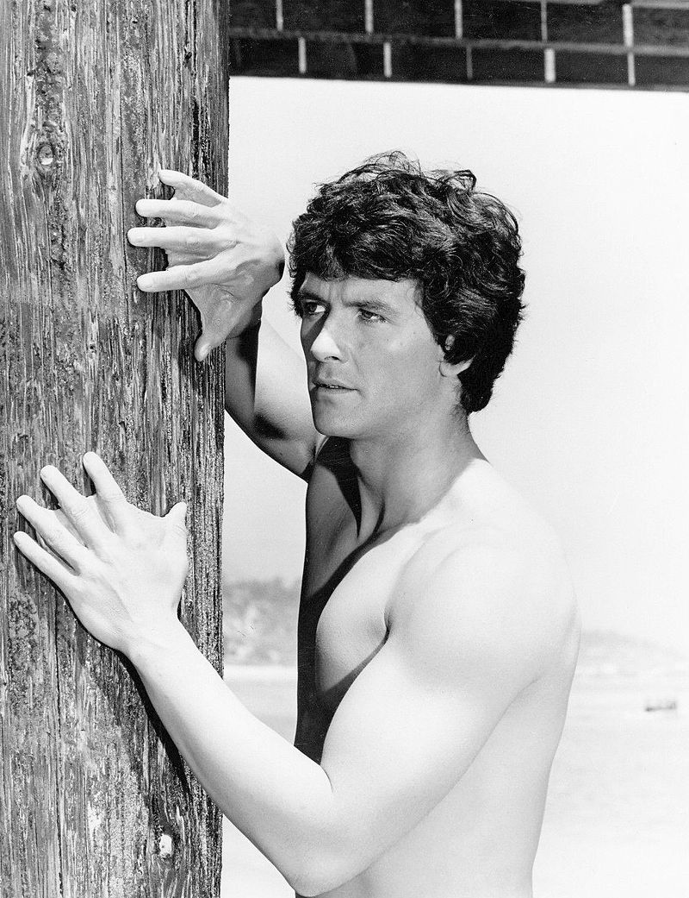

L'Homme de l'Atlantide ou L'Homme qui venait de l'Atlantide (Man from Atlantis) est une série télévisée américaine créée par Mayo Simon et Herbert F. Solow. 3 téléfilms de 98 minutes et 1 téléfilm de 74 minutes ont été diffusés entre le 4 mars 1977 et le 12 juin 1977, et une saison en 13 épisodes de 50 minutes a été diffusée entre le 22 septembre 1977 et le 6 juin 1978 sur le réseau NBC.
Mark Harris est le seul survivant de la légendaire Atlantide. Adapté au milieu sous-marin, il est doté de mains palmées, d'une vision décuplée et peut se déplacer sous l'eau de manière rapide et prolongée. Échoué sur une plage californienne après une violente tempête, il est sauvé par le docteur Elizabeth Merrill qui lui propose de rejoindre la fondation de recherche océanographique pour laquelle elle travaille.